To clean the visitation data on U.S. National Parks, I dropped columns with total values such as TentCampersTotal, YearTotal, and RVCampersTotal, as they were not necessary for this project. Column names were standardized for consistency, commas were removed from numeric strings, and object types were converted to integers.
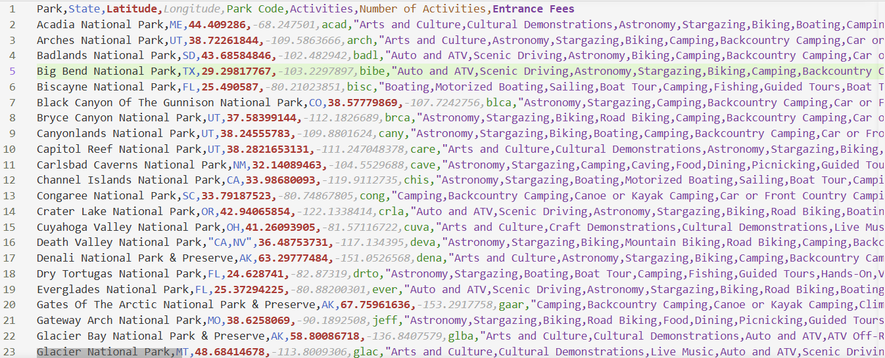
Figure 1. NPS visitation data pulled in CSV format from https://www.nps.gov/subjects/developer/get-started.htm.
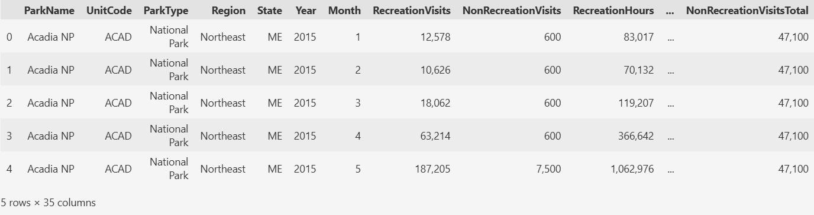
Figure 2. NPS visitation data before cleaning.Figure 3. NPS visitation data after preprocessing.
Dataset #2: National Parks API Data
The national parks dataset was prepared by filtering for national parks only, excluding national monuments and landmarks. A column was also added to capture the total number of activities each park offers for later analysis.
Figure 4. National parks data before cleaning.Figure 5. National parks data after preprocessing.
Dataset #3: National Parks and Visitation Combined Data
For further analysis, both datasets were combined using each national parks' 'Park Code'.
Figure 6. Combined data in CSV format
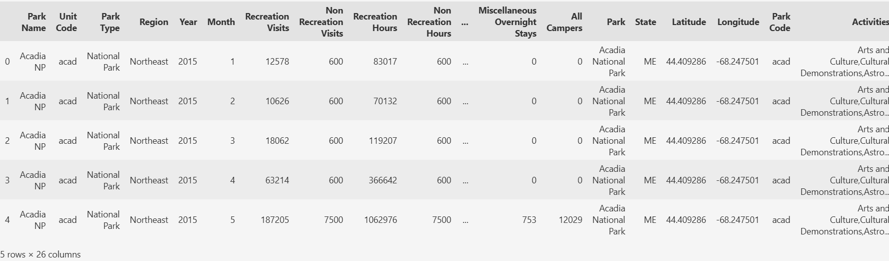
Figure 7. Spreadsheer of combined data
Data Cleaning - Missing Values
For my visitation dataset, there were no missing values that had to be addressed. Unlike the visitation dataset, there were 20 missing values for 'Entrance Fees' in the NPS dataset. To address this, I researched the price of entrance for each park and verified they were all free to enter. Therefore, I manually entered 0 for these 20 national parks that had free entrance.
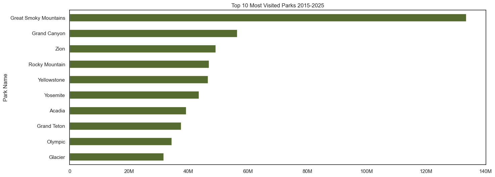
Figure 8. Top 10 Most Visited Parks 2015-2025
For my first plot, I wanted to see which parks are the most visited from the past 10 years of data. From this barchart, we can see that the most visited park is Great Smokey Mountain National Park. Following behind is Grand Canyon National Park, Zion, Rocky Mountain, etc.
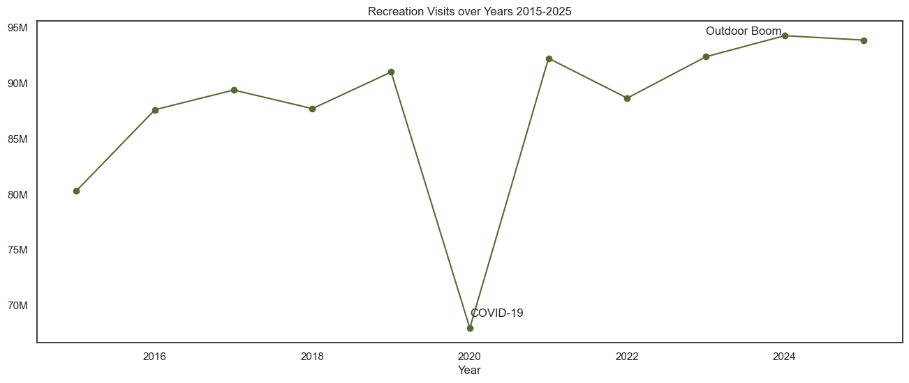
Figure 9. Recreation Visits from 2015-2025
In figure 9, we can see the number of recreation visits from 2015-2025. There was a drastic increase of approximately 7 million more visitors from years 2015-2016. Then a steady increase until COVID-19 happened and the global pandemic occured and a record breaking low hit national parks for visitation. Following the pandemic, the Outdoor Boom occured around 2023-2024. The Outdoor Boom was a trend that became not so much a trend. People turned outdoor recreational hobbies into lifestyle changes. People were outdoors more and it seemed like this trend was sticking with record breaking high visitation numbers for the next couple years.
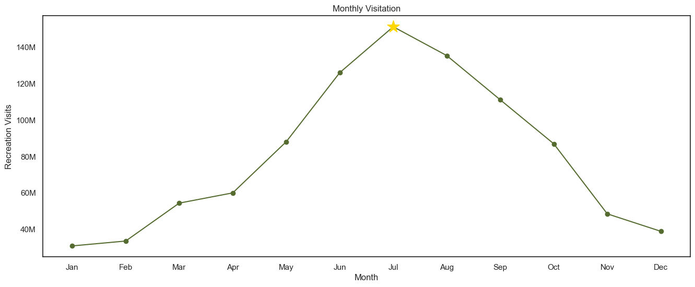
Figure 10. Recreation Visits by Month
Figure 10 shows the trend of visitation over a monthly basis. From this line chart, we can see that the summer months are the most popular time to visit national parks. The peak month for visitors in national parks is July.
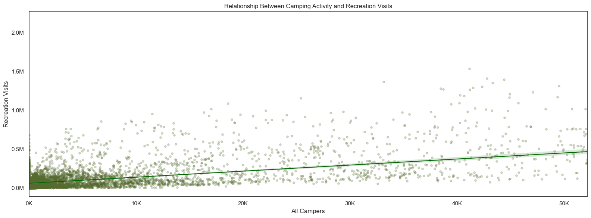
Figure 11. Relationship Between Campers & Visitation
This scatterplot shows the relationship between total camping activity (RV camping, tent camping, backcountry camping) and total visits. Does camping correlate with high visitation volume? We can see from the plot that there is a positive relationship with the two, the more campers the more visitors there are. This could potentially help us determine what factors drive visitation.
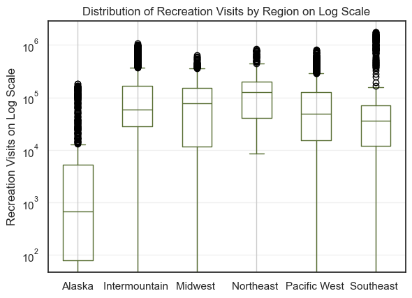
Figure 12. Distribution of Visits by Region (Log Scale)
In figure 12, we can see the distribution of recreation visits by region on a log scale. Alaska's median visit count is around 800. Compared to other regions, this makes sense based on how remote and difficult to reach most Alaskan parks are. The other regions are fairly similar to one another, though the Southeast shows the widest spread, potentially due to having a mix of smaller parks and parks with grand attraction. Every region has outliers pushing past 1 million visits. Keep in mind the y-axis is on a log scale, so the actual differences in visit counts are much larger than they visually appear.
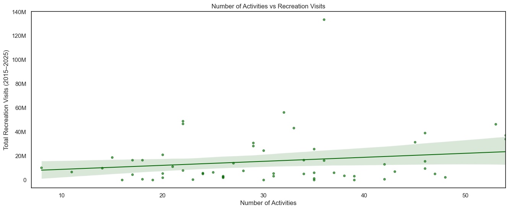
Figure 12. Relationship Between Number of Activities and Visitation
In figure 12, the scatterplot shows that there seems to be a slight positive relationship between the number of activities and the amount of visitation national parks receive. There seems to be some outliers around 23 activities offered, having visitation of around 50 million people. Potentially, just because a park offers more activities it does not mean more people will come.
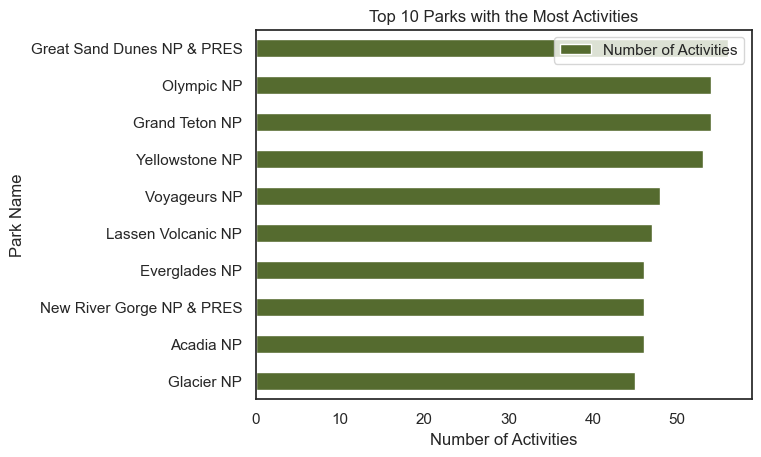
Figure 14. Top 10 Parks with the Most Activities
Figure 14 is a bar chart showing us which national parks have the most activities. Great Sand Dunes National Park comes in first place. From experience, this makes complete sense. Great Sand Dunes offers activities that little to no other parks can, such as sandboarding. Visitors can rent boards and ride down large dunes with views of vast mountain ranges.
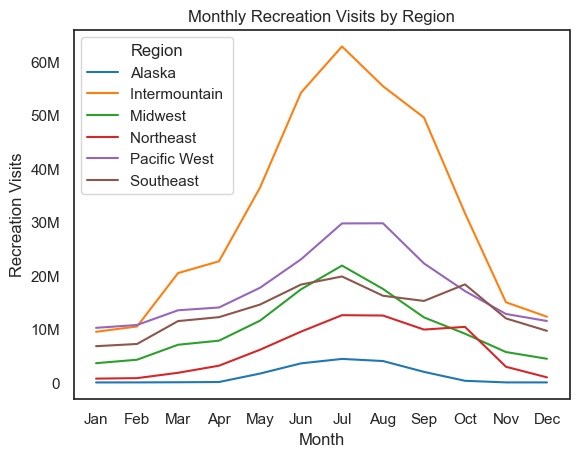
Figure 15. Monthly Visitation by Region
This line chart shows us a monthly visitation pattern by region of national parks. We can see that the Intermountain region has the most visitation. Some Intermountain national parks are Rocky Mountain in Colorado, Grand Teton in Wyoming, and Zion in Utah. The region with the least amount of visitation is Alaska. A region that has an interesting visitation trend is the Southeast. Its line has two peaks around the same value, one for peak visitation in July and another in October. Peak visitation in Fall is interesting but also makes sense due to 'leaf-peepers', individuals who travel and visit lands with remarkable leaf color-changing views in Fall.
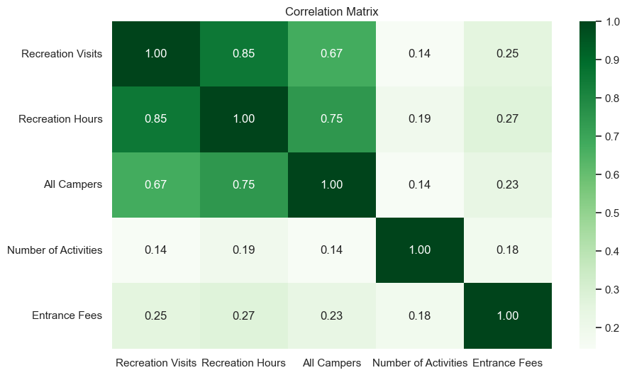
Figure 16. Correlation Heatmap
In figure 16, we can see the correlation matrix between key variables in our dataset. Recreation Visits, Recreation Hours, and All Campers are all strongly correlated with each other, with correlations of 0.85, 0.67, and 0.75 respectively. This makes sense, as parks that attract more visitors have more hours and more campers. The most surprising finding here is how weak 'Number of Activities' is with correlations barely reaching 0.19 with other variables. This supports what we saw earlier in the scatterplot, simply offering more activities does not mean a park will get more visitors. Entrance Fees also show weak correlations across all variables, meaning that fee price is not a strong driver of visitation one way or the other.
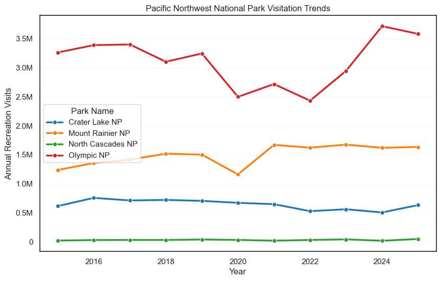
Figure 17. Yearly Visitation Trends in the Pacific Northwest National Parks from 2015 to 2025
In figure 17, we can see Olympic National Park has the most visitation, with over 3 million visits a year and reaching a record high around 2024. Every park took a visible hit in 2020 due to COVID-19, but all recovered. North Cascades National Park has the lowest visitation for the entire period, barely comparing to the others, likely due to its remote and rugged terrain.